Décocher tous les tâches

Cette commande, obtenue à partir du menu « Cocher » ou du menu contextuel du volet saisie de l’onglet, permet de décocher toutes les tâches visualisées dans les volets de saisie des onglets.
Créer un fichier d’un nouveau projet, l’enregistrer
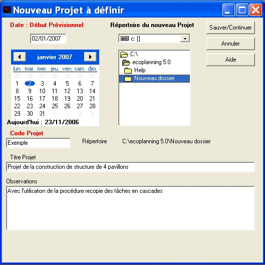
Vous allez pouvoir saisir :
- son code (avec choix d’un répertoire)
- choisir un répertoire Exemple Nouveau dossier
- son titre Opération de construction de la structure de 4 pavillons
-un commentaire
Avec la procédure de recopie des tâches en cascades
- la date de début du projet le 02/01/07
par défaut c’est la date du jour qui s’affiche
Dés que vous aurez sur la touche «Sauver /continuer »
vous visualiserez l’onglet « Saisie Prévisionnelle »
pour saisir les données des tâches de ce nouveau projet.
Choisir un calendrier
Lors de la création d'un projet, le calendrier qui est pris par défaut pour l’ensemble des tâches est le calendrier standard.
Vous pourrez si nécessaire en choisir un autre dans l’onglet « Saisie Prévisionnelle »
saisir un calendrier pour chacune des tâches, dans la colonne correspondante
affecter une par une ou aux tâches cochées un des calendriers mémorisés
Onglet Saisie Prévisionnelle présentation et utilisation
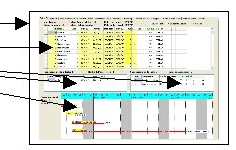
En haut de l’onglet
Dans le volet de saisie des données des tâches,
Pour la tâche en cours
Voir les procédures des démarches suivantes effectuées à partir de cet onglet:
Saisir les données des tâches du projet les ordonner entre-elles
Modifier l’ordonnancement des tâches, affiner le chemin critique
Autres actions avec l’onglet prévisionnel
Autre traitements avec les tâches cochées
En haut de l’onglet sont indiquées les informations concernant le nombre total des tâches du projet et le nombre de celles qui pourraient être concernées par un des les traitements avec « Tâches cochées » (paragraphe 3.).
Les deux nombres sont différents si un filtre est utilisé. Vous pourrez visualiser toutes les tâches à partir du menu " Filtrer "
Au cours de l’ordonnancement des tâches la date de fin du projet (en rouge) évoluera
Etant donné que cet onglet sera souvent utilisé:
d’une part on pourra, à tout moment, « Sauvegarder » les données modifiées que l’on vient de saisir, voir créer un autre fichier du projet avec « Sauvegarder Comme».
d’autre part, toutes les 12 minutes, le logiciel proposera à l’utilisateur de sauvegarder les dernières modifications faites.
Dans le volet de saisie des données des tâches, les champs « en gras » peuvent être saisis, ou modifier par les utilisateurs, les autres sont des champs calculés ou affectés par le logiciel, leur colonnes sont ombrés à savoir :
numéro tâche, désignation tâche, durée, début au plus tôt prévisionnel, fin au plus tôt prévisionnelle, marge totale,début au plus tard prévisionnel, fin plus tard prévisionnelle, calendrier début souhaité et fin souhaitée, les trois champs libres
Pour la tâche en cours
vont apparaître les données de son ou ses prédécesseurs et successeurs
La tâche en cours dans le volet et celle qui a une cellule avec un fond noir à l’intersection dans sa ligne avec l’une de ses colonnes
| Au Centre à Gauche, le Volet | Au Centre a Droite, le Volet |
| des prédécesseurs : numéro, | des successeurs : : numéro, |
| désignation, durée, début | désignation, durée, début |
| plus tôt prévisionnel possible | plus tôt prévisionnel possible |
| type de lien , décalage, | type de lien , décalage, |
| marge totale. | marge totale, date de début que permet la tâche, |
Saisir les données des tâches du projet les ordonner entre-elles
Créer une tâche plusieurs tâches
Saisir les données des tâches en particulier désignation et durée
La tâche en cours sa suppression
Ordonner lier entre elles les tâches d’un projet
Type de lien et décalage correspondant entre tâches
Créer et lier un prédécesseur à une tâche
Créer et lier un successeur à une tâche
Supprimer le lien entre une tâche et son prédécesseur ou son successeur
Cocher décocher une tâche avec la souris ou le clavier
Cocher décocher supprimer tâches cochées
Lier tâches d’un groupe de tâches dans l’ordre ou elles se suivent à l’écran
Lier une tâche avec plusieurs prédécesseurs
Lier une tâche avec plusieurs successeurs
Délier les tâches cochées entre elles
Créer une tâche plusieurs tâches
C’est dans l’onglet «Saisie Prévisionnelle » que l’on saisit toutes les données nécessaires à l’ordonnancement des tâches d’un projet.
- Positionnez-vous dans le volet « Saisie données tâche »
- Appuyez sur la touche "Inser" pour créer une tâche par exemple six fois pour créer 6 tâches de notre exemple
Remarque :
Lorsqu’on crée une tâche elle s'affiche à la fin de la liste et elle prend le n° suivant. Le logiciel va affecter un n° à chaque tâche dans l’ordre de leur saisie. La numérotation des tâches sert à ordonner les tâches entre elles.
Saisir les données des tâches en particulier désignation et durée
En vous déplaçant dans le volet en utilisant les touches de
Saisissez la désignation des tâches
Puis leur durée en jours travaillés
Tâche n° 1 : Ordre de service
1
Tâche n° 2 : Installation Chantier
5
Tâche n° 3 : Terrassement
3
Tâche n° 4 : Fondations
8
Tâche n° 5 : Elévation Sous-Sol
12
Tâche n° 6 : Plancher ht Sous-Sol
10
La tâche en cours - sa suppression
Dans le volet la tâche en cours et celle qui a dans sa ligne à l’intersection d’une des colonnes une cellule avec un fond noir dans l’exemple ci-dessous c’est la cellule n° de la tâche 1
Pour supprimer cette tâche en cours
- Appuyer sur la touche
- cliquer sur le bouton "Oui" pour le confirmer dans la boîte de dialogue qui apparaît,
Dans le volet du haut c'est la tâche n°63 qui est la tâche encours dans :
les volets prédécesseurs, successeurs, ordonnancement c'est la tâche en cours n63 qui est concernée
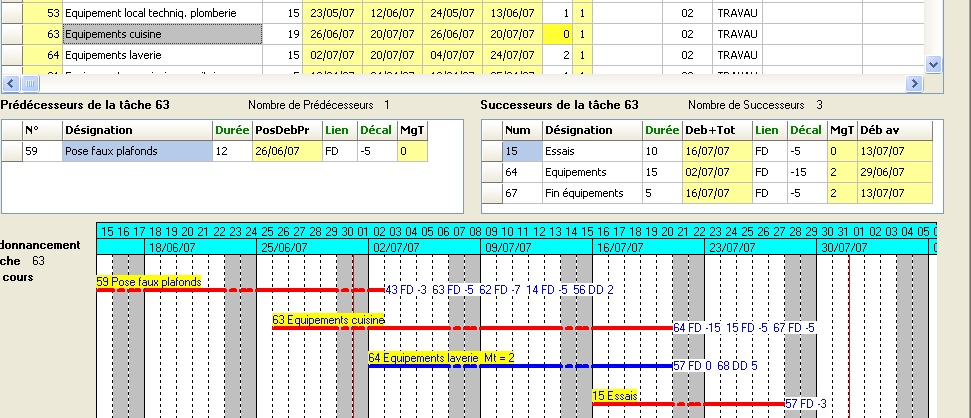
Ordonner lier entre elles les tâches d’un projet
Pour ordonner toutes les tâches concernées entre elles, on va prendre en compte les types de lien et les décalages correspondants entrer ces tâches
Le logiciel Ecoplanning permet :
- de lier une tâche à un prédécesseur et successeur
- de lier les tâches entre elles, en se déplaçant d’une à l’autre, et au passage saisir :
le ou les prédécesseurs de la tâche avec le type de lien et le décalage correspondant
le ou les successeurs de la tâche avec le type de lien et le décalage correspondant
voir les prédécesseurs et les successeurs en même temps
- de lier les tâches d’un groupe de tâches cochées dans l’ordre où elles se trouvent à l’écran
- de lier une tâche à plusieurs prédécesseurs
- de lier une tâche à plusieurs successeurs
Type de lien et décalage correspondant entre tâches
Lors de l'ordonnancement des tâches, les liaisons entre tâches on peut utiliser un des 3 types de liens suivants :
-Fin/début (FD) : la fin de la 1ère tâche conditionne le début de la 2ème tâche
-Fin/fin (FF) : la fin de la 1ère tâche conditionne la fin de la 2ème tâche
-Début/début (DD) : le début de la 1ère tâche conditionne le début de la 2ème tâche
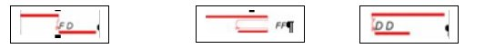
Décalages entre les tâches
Les décalages entre tâches peuvent être de 3 types,
Nota avec le lien DD pas de décalage négatif
Dans l’exemple présentation des décalages a partir du lien fd (fin/début) :
- décalage négatif : chevauchement des tâches, la 2ème tâche commence avant la fin de la 1ère tâche
- décalage nul : la 2ème tâche commence dès que la 1ère tâche est terminée (le lendemain)
- décalage positif : la 2ème tâche commence après un certain décalage par rapport à la fin de la 1ère (séchage, approvisionnement, délai de décision, etc.)
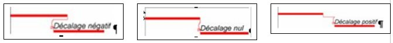
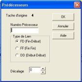
Créer et lier un prédécesseur à une tâche
Dans notre exemple lier la tâche n° 1 à la tâche n°2
- Positionnez-vous dans le volet du haut sur la tâche concernée la n°2
- Cliquez dans le volet du bas à gauche
- Appuyez sur la touche "Inser"
- Indiquez, dans la boîte de dialogue qui va apparaître le n° de la tâche prédécesseur la n°1
Vous pourrez : choisir le type de lien et le décalage entre les tâches,
Dans l’exemple par défaut on aura le lien fd avec un décalage =0
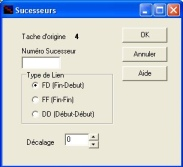
Créer et lier un successeur à une tâche
Dans notre exemple lier la tâche n° 5 à la tâche n°2
- Positionnez-vous dans le volet du haut sur la tâche concernée la n°2
- Cliquez dans le volet du bas à droite
- Appuyez sur la touche "Inser"
- Indiquez (dans la boîte de dialogue qui va apparaître le n° de la tâche successeur la n°5
Vous pourrez : choisir le type de lien et le décalage entre les tâches, Dans l’exemple par défaut on aura le lien fd avec un décalage =0
Supprimer le lien entre une tâche et son prédécesseur ou son successeur
- placez-vous devant la tâche en cours concernée
- cliquer sur le volet prédécesseur ou successeur
- placez-vous sur le prédécesseur ou successeur qui est concerné (il doit avoir une cellule sur fond nori)
- cliquer sur la touche «suppr » puis confirmer dans la boîte de dialogue.
Nota Vous pourrezr délier les liens d’un groupe de tâches
Cocher décocher une tâche avec la souris ou le clavier
Pour cocher une tâche dans un volet saisie d’un onglet
- placez-vous devant le n° de la tâche dans la case
- cliquez avec la souris sur cette case, ou appuyez sur la touche "Espace"
Lorsque vous cochez une tâche, une coche apparaît dans la première case de sa ligne.
- effectuez la même démarche pour décocher une tâche
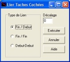
Lier tâches d’un groupe de tâches dans l’ordre ou elles se suivent à l’écran
- Cochez, par défilement, à l’écran, les tâches concernées avec la souris ou la barre d’espace
- cliquez commande "Lier tâches cochées" du Menu "Cocher",
- cliquez sur le bouton "Exécuter",
- Ou Utilisez le boutons «lier tâches cochées »
Ces tâches seront liées entre-elles, par défaut, avec le type de lien ‘’Fin / Début’’ et un décalage nul.
Vous pourrez, ajuster le décalage entre tâches et changer de type de lien, par la suite tâche par tâche
voir paragraphe suivant.
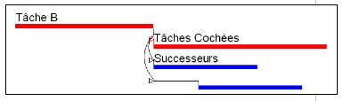
Lier une tâche avec plusieurs prédécesseurs
- faites défiler les tâches, et cochez, avec la barre
d'espacement, les tâches que vous désiriez
affecter comme successeurs à celle-ci,
- placez-vous devant cette tâche B.
- choisissez Menu «cocher », puis «Affecter
un prédécesseur aux tâches cochées».
- confirmer cliquez sur «exécuter »,
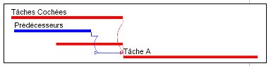
Lier une tâche avec plusieurs successeurs
- faites défiler les tâches, et cochez, avec la souris,
les tâches que vous désiriez affecter comme
prédécesseurs à celle-ci,
- placez-vous devant cette tâche A
- choisissez Menu «cocher », puis Affecter un
successeur aux tâches cochées».
- confirmer cliquez sur «exécuter »,
Cette tâche va être liée avec ses prédécesseurs, sa date de début au plus tôt sera celle imposée par son ou ses prédécesseurs les plus contraignants
Pour commencer cette tâche plus tôt, (voir «déb prévis possible » volet prédécesseur) Dans la colonne «décalage » vous choisirez le décalage négatif nécessaire avec son ou ses prédécesseurs les plus contraignants
Délier les tâches cochées entre elles
- cochez, par défilement à l’écran, avec la barre d’espacement, toutes les tâches à délier entre elles,
- cliquer sur la commande "Délier les tâches cochées», Menu "Cocher", ou avec le menu contextuel
- Ou utilisez le bouton «délier tâches cochées »
Tous les liens entre ces tâches cochées vont être supprimés, sauf les liens
avec les autres tâches qu’ils ne sont pas cochées
Modifier le type de liens et décalage des tâches
A tout moment il est possible de modifie, d'affiner, le type de liens et décalage des tâches
On peut modifier le décalage de la tâche en cours avec son prédécesseur
- Cliquez dans la colonne sur le prédécesseur concerné et saisissez le décalage voire le type de lien,
- Cliquez dans la colonne sur le successeur concerné et saisissez le décalage voire le type de lien.
Visualisation tâche en cours avec ses seuls prédécesseurs et successeurs
Sur ces tâches on aura dans l’ordre : le ou les prédécesseurs, la tâche en cours, le ou les successeurs
avec leur n°- leur désignation – leur marge totale (Mt) (pour les tâches non critiques)
Au niveau du choix de l’échelle du Gantt
C’est le logiciel qui par défaut va choisir, pour chaque tâche, l’échelle pour le Gantt :
- j/s pour une durée inférieure ou égale à 21jours
-s/m pour une durée supérieure à 21jours et inférieure ou égale à 63 jours
- m/a pour une durée supérieure à 64 jours
Remarque sur le chemin critique
Dans le volet de saisie des données des tâches, une tâche qui a une case blanche dans sa colonne sur fond jaune « Marge totale », est sur le chemin critique, et sa valeur est égale à zéro.
Dans le cas contraire les tâches qui ont une marge égale ou supérieure à un ne sont pas sur le chemin critique, elles présentent des marges totales,
Dans le Gantt de l'ordonnancement les tâches critiques ont leur trait en rouge, une tâche non critique à un trait en bleu, sur lequel est indiquée sa marge totale.br>
Si une tâche qui à une marge totale par rapport à un successeur, on peut augmenter de cette valeur la tâche, ou la décalée de cette valeur, sans que ce successeur ne soit décalé. Il n’y aura pas de conséquence au niveau du déroulement du projet sur les autres tâches.
Affiner l’ordonnancement des tâches au niveau du déroulement d’un projet
Dans l’Onglet Saisie Prévisionnelle, au niveau du déroulement du projet et pour chaque tâche, vous allez connaître son acuité : savoir si elle est critique, dans le cas contraire sa marge au niveau de ces successeurs.
- Placez-vous sur le volet de saisie des données sur la ligne d’une tâche (la tâche en cours), les prédécesseurs de cette tâche vont apparaître dans le volet « prédécesseurs »
Dans la case de la colonne «début possible» du volet prédécesseur vous connaîtrez pour la tâche en cours, le début au plus tôt possible que lui permet chacun de ses prédécesseurs. La date de début de cette tâche en cours sera imposée par son prédécesseur le plus contraignant. Vous pourrez faire des modifications.
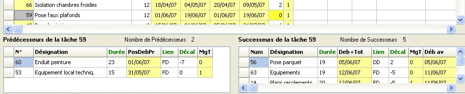
Pour la faire commencer cette tâche en cours plus tôt, vous devrez apporter un décalage négatif plus important entre cette tâche et son prédécesseur le plus contraignant. Pour les tâches critiques on connaîtra, immédiatement, cette incidence à partir de la lecture de la nouvelle date de fin du projet modifiée en haut de l’onglet.
Dans le volet successeur pour la tâche concernée vous connaîtrez pour chacun de ces successeurs :
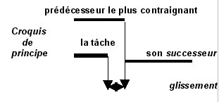
Par comparaison avec
sa date de début au plus tôt qui lui permet la tâche
et les dates de début possible que lui imposent un
ou plusieurs prédécesseur plus contraignants
vous connaîtrez le glissement qu’elle pourrait
avoir avec chacun de ses successeurs
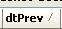
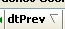
Classez les tâches dans le volet de saisie
- cliquez en haut dans le titre d’une colonne
une barre oblique va apparaître et les tâches vont être classées dans l’ordre croissant de ce champ
En cliquant dans la colonne date d’exécution au plus tôt, cette démarche permet de classer les tâches par début au plus tôt dans l’onglet « Saisie prévisionnelle »
- cliquez au nouveau dans cette case un crochet (dirigé à gauche) va apparaître et les tâches vont être classées dans l’ordre décroissant
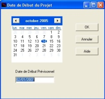
Modifier la date de début d’un projet
A tout moment vous pourrez la modifier la date de début du projet .
- cliquez sur « Date de début du projet » du menu « Projet »
- faites défilez les mois du calendrier
- cliquez sur la date choisie
Lorsqu’on change la date du début du projet, toutes les tâches vont être décalées de la différence qu’il y a entre l’ancienne date de début et la nouvelle. Les dates de début et fin souhaitées vont être décalées de la même valeur.
Saisir une date de début ou de fin souhaitée
Les dates souhaitées : de début et/ou de fin au plus tôt, elles peuvent être :
- une prise en compte des contraintes extérieures : un approvisionnement, une étude, etc.
- des dates intermédiaires de votre opération, "des points de repères" que vous désirez suivre
- un moyen pour décaler une tâche et celles qui lui sont liées.
Pour saisir une date avec contrainte extérieur choisissez la colonne Début ou de Fin souhaitée et dans la case correspondante saisissez cette date.
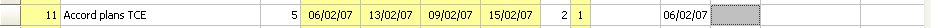
Nota Si une date début ou de fin souhaitée a été saisie au préalable, et si vous indiquez une nouvelle date de début ou de fin souhaitée souhaité, c’est celle-ci, la dernière date indiquée, qui sera prise en compte.
Saisir les informations dans les trois Champs libres
On peut saisir des informations générales relatives a certaines tâches du projet dans chacun des trois champs libres de l’onglet , pour les faire apparaître si nécessaire ensuite sur les plannings.
- cliquez dans un de ces trois champs et saisissez cette information
Autre traitements avec les tâches cochées
Comment cocher décocher supprimer les tâches cochées
Copier un groupe de tâches cochées
Affecter un Calendrier au Taches Cochées
Compléter la désignation de tâches cochées
Affecter données aux tâches cochées
Affecter code de sélection aux tâches cochées
Comment cocher décocher supprimer les tâches cochées
Nota Ces commandes indiquées ci-après peuvent être aussi utilisées à partir
du menu « cocher » du menu contextuel de l’onglet « Saisie Prévisionnelle)
Cocher toutes les tâches
Décocher tous les tâches
Cocher <--> décocher tâches
Supprimer éléments cochés
Cocher toutes les tâches
Décocher tous les tâches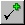
Cette commande, obtenue à partir du menu « Cocher » ou du menu contextuel du volet saisie de l’onglet, permet de cocher toutes les tâches visualisées dans les volets de saisie des onglets.
Décocher tous les tâches
Cette commande, obtenue à partir du menu « Cocher » ou du menu contextuel du volet saisie de l’onglet, permet de décocher toutes les tâches visualisées dans les volets de saisie des onglets.
Cocher <--> décocher tâches
Cette commande, obtenue à partir du menu « Cocher » ou du menu contextuel du volet saisie de l’onglet permet, dans les volets de saisie des onglets, de décocher toutes les tâches cochées et de cocher les autres visualisées.
Supprimer éléments cochés
Cette commande, obtenue à partir du menu « Cocher » ou du menu contextuel du volet saisie de l’onglet, permet de supprimer toutes les tâches cochées dans les volets de saisie des onglets.
La boîte de dialogue "Confirmer effacement" apparaît vous devrez le confirmer
Copier un groupe de tâches cochées
Possibilité de copie simple d’un groupe de tâches cochées, puis de modifier certaines données.
Possibilité de copie en cascade d’un groupe de tâches cochées
Nota le traitement "Copier les tâches cochées" est souvent suivi par les traitements:
Affecter données aux tâches cochées
Compléter la désignation des tâches
Possibilité de copie simple d’un groupe de tâches cochées
On doit établir un planning d'une construction similaire, mais indépendante entre-elles (exemple une à Lyon, l'autre à Bordeaux)
On saisie les données de la construction de la première (en principe la plus complète). On lie les tâches entre-elles, on affecte à chacune un code critère par exemple phase, c'est-à-dire la ou va être réalisée la construction, ainsi que les sous critères des lots affectés à ces tâches
- Cochez les tâches de la première construction
- Menu "Cocher" commande "Copier les tâches cochées »
dans la boîte de dialogue qui apparaît.
Assurez-vous que la case "Copie en cascade" n'es past cochée.
- Cliquez sur le bouton "Exécuter" pour valider.
Les nouvelles tâches sont insérées à la fin de la liste.
Ensuite, on affectera à toutes celles-ci (cochées) un code de localisation.
On saisira la date de début de cette deuxième construction et on affinera si nécessaire les données de ses tâches.
Possibilité de copie en cascade d’un groupe de tâches cochées
Nota Même démarche que dans la copie simple, mais en plus pour les tâches identiques du groupe initial et du groupe recopié, on va créer entre elles des liens de type FD avec un décalage nul. Ce qui permettra ensuite de regrouper et de visualiser les données identiques des différents groupes recopiés.
On doit établir le planning de constructions similaires dont les exécutions se suivent par exemple un groupe de 4
pavillons à construire sur le même terrain.
- Cochez les quatre tâches d’exécution (3-4-5-6) de la première construction à recopier
- Menu "Cocher" commande "Copier les tâches cochées »
dans la boîte de dialogue qui apparaît.
- Assurez-vous que la case "Copie en cascade" est cochée.
Cette case, lorsqu'elle est cochée,permet de lier les nouvelles
tâches avec les anciennes, avec le type lien DF (Fin / Début
et un décalage (nul) par défaut.
- Cliquez sur le bouton "Exécuter" pour valider.
Les nouvelles tâches sont insérées à la fin de la liste.
Elles auront la même désignation et la même durée que les anciennes tâches.
La tâche de la deuxième construction commencera après la fin de la tâche identique de la
première construction, il en sera de même pour toutes les tâches de même nature.
On affinera si nécessaire les données de ses tâches (Les durées d'exécution des tâches peuvent être différentes : par exemple entre un pavillon de 5 pièces et un de 7 pièces).
Ceci va permettre de visualiser, sur un même planning les tâches de plusieurs pavillons, de pouvoir visualiser la charge de chacun des différents intervenants.
Affecter un Calendrier au Taches Cochées
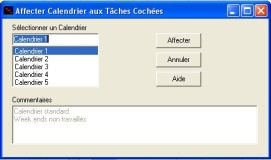
Affectation d'un calendrier aux Tâches
Vous avez deux possibilités
affecter tâche par tache un calendrier aux tâches
* saisir dans la casse de la colonne calendrier de la tâche concernée
le numéro du calendrier
* affecter en même temps un calendrier à un groupe de tâches cochées
- cocher les tâches concernées,
utiliser le Menu «Cocher» ou le menu contextuel
et choisir« Affecter un Calendrier »
dans la boîte de dialogue "Visualiser calendrier » apparaît.
- choisir le calendrier concerné
- cliquer sur la commande affecter
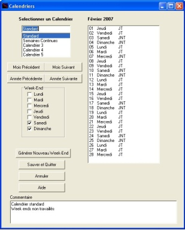
Créer un nouveau Calendrier ou en modifier un.
Avec le logiciel Ecoplanning vous avez 5 types de calendrier à vôtre disposition
calendrier 1 c’est le calendrier, standard de base, Dans celui-ci sont neutralisés les jours fériés légaux en France et les week-ends (samedi et dimanche)
C’est celui qui est pris par défaut et affecté à toutes les tâches lors de la création d’un nouveau projet.
calendrier 2 il correspond une période continue sans jours neutralisé 7 jours sur 7
Il permet de prendre en compte, en particulier, la durée d’une consultation pour un type de marché public
Cette boîte de dialogue qui permet de paramétrer les trois autres calendriers possible 3 - 4 – 5 en prenant en compte tous les jours de Week-end et non travaillés.
La procédure est la suivante
- sélectionner un calendrier non utilisé (le n° 3 -le n°4 - le n° 5)
Dans la liste des Week-end
- cocher : le ou les jours fériés choisis
- cliquer sur la commande « Générer nouveau Week-end
Dans la liste de droite vont s’afficher ces Week-end avec JNT en regard
des autres JT jour travaillé
Vous devrez compléter le calendrier en saisissant les autres jours non
travailles des différents mois pour cela :
Utiliser les boutons
- cliquer sur une date si elle était JT elle devient JNT jours non travaillé
- ajouter un commentaire à ce calendrier
- cliquer sur la commande Sauver et Quitter
Compléter la désignation de tâches cochées
Cette commande permet de remplacer la valeur d'un champ par une
nouvelle valeur
- cliquer sur toute les tâches concernées
- utilisez la commande « Compléter la désignation de tâches
cochées» du menu « Cocher »
- saisissez dans la zone de saisie
- saisissez la nouvelle valeur dans la zone de saisie
Affecter données aux tâches cochées
La procédure est la suivante on a deux cas
Premier cas (champ autre que critère)
- choisir l’un des champs de liste de gauche après les critère
(a partir du n°)
Celui-ci va s’afficher (couleur rouge) en haut « champ sélectionné »
- saisir sa valeur correspondante
- cliquer sur la commande «Exécuter ».
Deuxième cas (champ d’un critère)
- choisir l’un des champs critère dans la liste de gauche
il va s’afficher (couleur rouge) en haut sous le champ sélectionné
- puis choisir l’un des champs des sous critère qui apparaît dans la liste de droite le code du sous critère choisi et sa désignation va apparaître dans la case valeur
- cliquer sur la commande «Exécuter ».
voir également "affecter code de sélection aux tâches cochées"
Affecter code de sélection aux tâches cochées
En plus de l’affectation à une des tâches des codes critères hiérarchisés il est possible d’affecter à une tâche un «Code de sélection» de 10 caractères alphanumériques. Vous saisirez ce code tâche dans la colonne correspondante de l'onglet « saisie prévisionnelle »
Ils permettent une utilisation simple et rapide car on ne leur affecte pas désignation.
Ils sont destinés être utilisés comme simple code de sélection au cours de la mise au point du projet.
Il sera ensuite possible d’affecter aux tâches cochées qui présentent une même partie d’un code de tâche
un sous critère.
Onglet « Gantt Prévisionnel »
L’onglet « Gantt prévisionnel » est en osmose avec l’onglet «Saisie prévisionnelle»
Pour information en haut de l’onglet est indiqué le nombre de tâches du projet et le nombre de tâches visualisées, pour permettre de savoir si un filtre a été utilisé.

En haut à droite on visualise sous la forme de portrait
la réduction du planning du projet donné
- choisissez avec le curseur du zoom
un agrandissement de 1 à 10
- cliquez sur une partie du planning réduit à gauche
au format portrait. Vous verrez apparaître cette
partie grossie pour examiner dans le détail ce planning.
On va pouvoir défiler et visualiser toutes le tâches
du projet; ainsi vous pourrez examiner et
contrôler l’ordonnancement des tâches
du planning de celui-ci.
Par ailleurs vous pourrez faire apparaître plus de tâches
- cliquez sur « Distance verticale» entre tâches et modifier celle-ci
Si vous réduisez cette distance vous augmenterez le nombre des tâches à l’écran,
Le libellé de la tâche apparaît au dessus du trait : son n°, sa désignation, sa durée, sa marge totale (si elle supérieur à 0) Le n° de ses successeurs avec leur type de lien et décalage correspondant apparaît à la droite du trait. Les tâches ayant une marge = 0 sont critiques leur trait est en rouge, les autres sont en bleu.
On pourra imprimer ce planning .
Nota Mais en cas de projet important ou pour une autre raison, on peut choisir un filtre pour limiter le nombre de tâches à visualiser à l’écran en même temps, et ainsi visualiser le projet par parties.
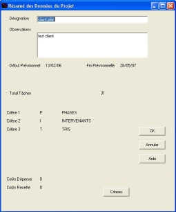
Boite de Résumé
On connaît pour le projet en cours
- le code, la désignation et les observations du projet
- le nombre tâches saisies
- l e code et la désignation des trois critères
- le total des coûts négatifs dépenses
- le total des coûts positifs recettes
Si on clique sur la commande " critères " on connaîtra les détails des sous critères utilisés
| Sommaire | Mots Clés | A | B | C | D | E | F | G | H | I | J | K | L | M | N | O | P | Q | R | S | T | U | V | W | X | Y | Z | Autres |